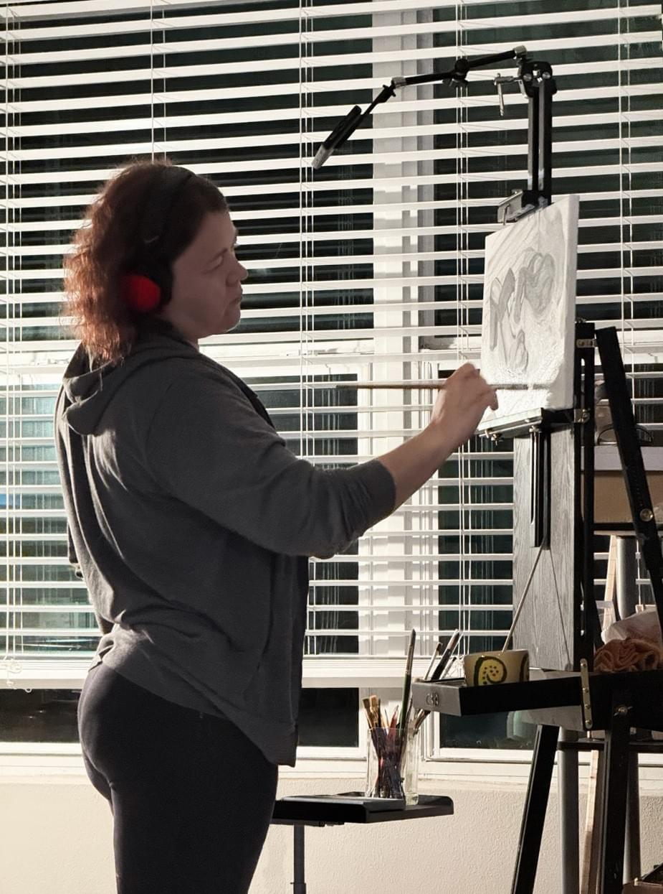
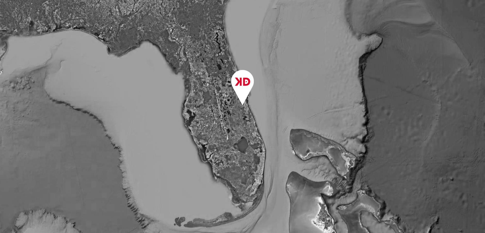

Hello! My name is Katrin Barshe. I'm an artist + designer living in Melbourne, Florida.
My world is a world of emotions and art. My journey has taken me across vast landscapes—the endless horizons of Siberia, where nature feels untamed and free; the cold winter sea, where colors shift with the wind; and cities that never sleep—Rio, Moscow, New Orleans—where life pulses in vivid, electric hues.
Through it all, I always return to the ocean. It is timeless, enchanting, ever-changing, yet constant. Like the waves, my work carries the echoes of these places, the rhythm of my journey, the sincerity of each moment.
Thank you for stopping by. If my art speaks to you, then we are already connected—without words, across any distance.
Get in touch: katrinbarshe@gmail.com
